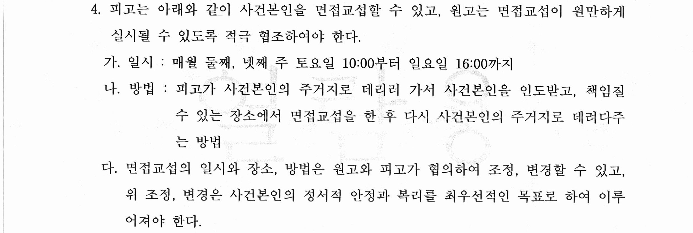

안녕하세요.
법무법인 글로리
대표 변호사 이아무 입니다.
오늘 소개해드릴 사례는
미성년 자녀(사건 본인)의
친권 및 양육권자 지정에 대한 판결입니다.
원, 피고 사이에는
만 7살, 초등학교 1학년인 자녀가 한 명 있었고,
원피고가 이혼하면서
서로 친권 및 양육권자로
본인이 지정되기를 원했던 사건이었습니다.
이 사건을 특별히 소개해드리는 이유는,
미성년 자녀가 비교적 어린 나이임에도
불구하고 모가 아닌 부가
친권 및 양육권자로 지정된 점인데요,
2012년에 혼인신고를 하여
약 8년 동안 법률상 부부로 지낸
원고와 피고는
배우자의 폭언과 폭행, 자해, 자살 소동,
사건 본인 방치 등으로 인하여
극심한 갈등을 빚어왔고,
원고는 사건 본인의 안전이 보장될 수 없다는
판단을 하였고 이혼소송을 진행하기 위해
저희 법인을 방문하게 되었습니다.
1. 기본적인 사항
① 혼인 기간 : 약 8년
② 원고 : 회사원
피고 : 회사원
③ 미성년 자녀 여부 : 1명
2. 판결 결과(화해권고 결정)
사건 본인의 친권자 및 양육자로 원고를 지정한다.
이 사건 이혼을 원인으로 한
일체의 재산상 청구권
(위자료, 재산분할 청구, 양육비 청구 등)
및 연금에 대한 분할 청구권을 포기한다.
라는 화해권고 결정을 받았습니다.

3. 위와 같은 결과가 나오게 된 원인
이혼은 혼인의 당사자들 간의 문제이지만,
미성년 자녀가 있는 경우에는
당사자들의 이혼이
미성년 자녀의 성장환경에
미치는 영향이 크기 때문에
미성년자의 친권자 및 양육권자를
지정함에 있어서는
당사자들의 의사와 더불어
가정법원이 자녀의 복지의 관점에서
누구에게 친권 및 양육권이
주어지는 게 나은지 판단하게 됩니다.
원고는 자녀의 아버지였고,
이혼을 하고 어머니인 피고가
양육을 하게 될 경우
정서적 신체적으로 정상적으로
성장하지 못할 것이 심히 걱정되었습니다.
그래서 9시-18시 근무를 하는 직장에
다니고 있었음에도
본인이 자녀를 양육하기를 강하게 원하였기에,
이 사건 소송 내내 친권자 및 양육권자 지정에
대하여 원피고는 심하게 다투었습니다.
결론적으로 재판부는
아버지인 원고의 손을 들어주었는데요,
자녀의 나이가 비교적 어린데도 불구하고
아버지에게 양육권이 인정된 경우는
흔하지 않기 때문에,
이 사례를 검토하는 게 의미가 있어 보입니다.
아버지인 원고에게 8살 자녀에 대한 양육권이 인정된 이유는
첫째, 어머니인 피고에 비하여
아버지인 원고의 양육환경이
자녀의 입장에서 더 나았기 때문입니다.
사건 본인은 원고의 부모 즉,
할아버지 할머니와
잦은 만남으로 정서적인 친분관계가
외가 쪽보다 두터웠고,
원고의 거주지 가까운 곳에
원고의 부모님이 거주하고 있어,
양육보조자로서 양육을 도와줄 환경이
조성되어 있었습니다.
이에 비해 피고 측 부모님은 멀리 있어
사실상 양육을 도와줄 수 없었기 때문에
마찬가지로 직장 생활을 하는
피고가 직장에 가있는 동안은 어린 자녀는
사실상 혼자 있어야 하는 시간이
길어질 것으로 보였습니다.
둘째, 이 사건 혼인 파탄의 사유와도 관련이 있는데요,
저희는 피고가 이 사건 혼인 기간 중
자해 소동을 벌이는 등,
정신적으로 불안정한 모습을 보여왔다는 점을
들어 미성년 자녀를 양육하기에
적합하지 않다는 점을 주장 입증하였습니다.
셋째, 저희는 이 사건 혼인이 파탄 나면서
피고가 자녀의 양육에 보인 태도를 집고 넘어갔습니다.
피고는 원고와의 혼인이 파탄 나는 시점에
사건 본인이 보는 앞에서
원고에게 '사건 본인을 데리고 나가'
라는 식의 말을 하였고,
자녀를 두고 친정에 가서
돌아오지 않는 등 마치 양육권을
포기하는 듯한 모습을 보여왔습니다.
저희는 위와 같은 피고의 태도와 더불어
원고의 양육환경이 피고에 비하여 우수한 점,
사건 본인이 원피고의 이혼으로 인하여
정서적으로 불안정한 상태인 만큼
더 안정적으로 사건 본인을 돌볼 수 있는
피고가 친권 및 양육권자로
지정되어야 한다고 주장하였고,
결국 재판부는 원고의 손을 들어주었습니다.